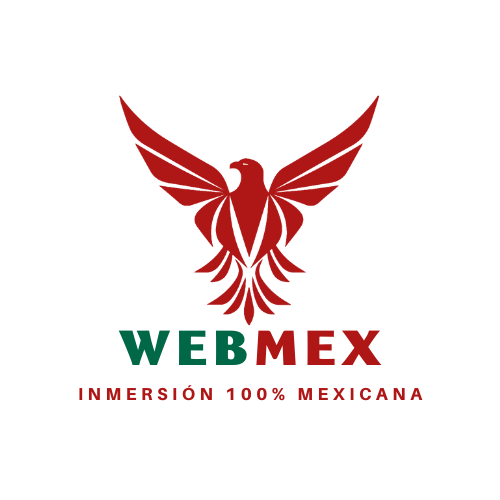

viabilidad Financiera
La inversión inicial en el primer año es aproximadamente de $277,600.00, tomando en cuenta costos fijos, costos diferidos y capital de trabajo. Se calcula que las ventas anuales tomando el 10% del mercado.
Elige proveedores de una vez por todas, una vez que termines esta navegación serás capaz de acceder a cualquier distribuidor y crear tus propias empresas.
Comienza ahoraTodo lo necesario, además de los beneficios por los cuales debes registrarte y asociarte con WebMex
La inversión inicial en el primer año es aproximadamente de $277,600.00, tomando en cuenta costos fijos, costos diferidos y capital de trabajo. Se calcula que las ventas anuales tomando el 10% del mercado.

Sistemas de Computacion, Mano de obra: se cuenta con dos estudiantes en ingeniería en informática capacitados en el área de desarrollo de software, diseño web, marketing digital, atención al cliente y logística.

El mercado objetivo podría incluir a emprendedores y pequeñas empresas que buscan expandir su negocio o encontrar nuevos proveedores para obtener mejores precios y una mayor variedad de productos.
En la actualidad, la escasez de empleos es una realidad que enfrentan muchos mexicanos, lo que ha llevado a un aumento en la creación de pequeñas y medianas empresas como una forma de obtener un sustento económico. Sin embargo, una de las principales dificultades que enfrentan los emprendedores es encontrar proveedores confiables que les ofrezcan productos de calidad a precios competitivos, lo que puede ser aún más difícil para aquellos con escasez de ingresos
Entra a nuestra familia
Versión
Registro Proveedor = $1500
Costos Minimos
Renovación bajo contrato
Versión
Membresia Mensual Proveedores = $150
Cancelación inmediata
Pagos "cómodos"
Versión
Membresia Premium Proveedores = $200
Publicidad incluida
Acesso a afiliados Premium

Hola!Mi papel que juego como una de las creadoras del proyecto WebMex se debe a mi experiencia como estudiante de la carrera en Administración, así como los cursos que he cursado a lo largo de mi vida estudiantil. Algo que me caracteriza es el buen manejo de liderazgo, responsabilidad y la disciplina.!
Hola! Como programador lider del proyecto, dentro de mi perfil puedo destacar algunos de estas fortalezas de mi persona; responsablidad, liderazgo, disciplina, trabajo en equipo y adaptatividad. Además que en mi perfil profesional sobresale el dominio y manejo de HTML, CSS, JS, Python, Java, SQL, especializado en el uso de TI, con conocimiento sobre programacion de videojuegos en 2D, CiberSeguridad y Hacking Ético.
Hola! Dentro de mis competividades entran las siguientes cualidades: planificación y organización, toma de desiciones además de la comunicación afectiva, en el ámbito profesional tengo diversas especializaciones desde la gestión del personal de la empresa, asi como la organizacion de la misma, adentrada en la selección, manejo y contratacion de recursos humanos, resolución de conflictos y/o problemas. Así como contar con conocimiento sobre emprendimiento (ICATCAM-DJ/09/2022, "Modelo Talento Emprendedor")
Soy una administradora con experiencia en gestión de equipos. Poseo habilidades de análisis de datos, planificación estratégica y resolución de problemas que me permiten mejorar procesos y resultados en las organizaciones. Cuento con experiencia laboral en el área de marketing, enfocado en desarrollar habilidades y conocimientos en gestión de proyectos, finanzas y otras áreas de la administración. Poseo habilidades en investigación de mercado, análisis de datos y coordinación de eventos, así como una fuerte capacidad de trabajo en equipo y pensamiento crítico.
Hola, como parte del equipo de programación de este proyecto, destacó habilidades qué a lo largo he aprendido, los cuales son: liderazgo, trabajo en equipo, adaptabilidad, entre otros. También tengo conocimientos en distintas áreas de la informática, como lo es la ciberseguridad, IoT, programación web y videojuegos. Los lenguajes qué domino son: Python, JS, HTML, SQL.

¿Qué es lo que debes saber sobre WebMex?
WebMex es una alternativa a la innovacion ya que radica en la creación de una plataforma en línea que concentre la información de múltiples proveedores mayoristas mexicanos, lo cual permitirá a los emprendedores y pequeñas empresas encontrar rápidamente los productos y servicios que necesitan a precios competitivos y de manera confiable. Además, la plataforma también busca ser un medio para fomentar el desarrollo económico en México, ya que permitirá a los proveedores locales tener una mayor visibilidad y aumentar su base de clientes, lo cual puede contribuir al crecimiento de sus negocios.
El mercado objetivo podría incluir a emprendedores y pequeñas empresas que buscan expandir su negocio o encontrar nuevos proveedores para obtener mejores precios y una mayor variedad de productos. Al ofrecer información detallada sobre múltiples proveedores mayoristas mexicanos en un solo lugar, la plataforma en línea puede ayudar a los emprendedores y pequeñas empresas a tomar decisiones de compra más informadas y eficientes. En el caso de proveedores, el mercado potencial incluye pequeñas y medianas empresas que desean aumentar su visibilidad y ventas en línea, por otro lado, el mercado potencial de clientes incluye a empresas de todos los tamaños y sectores que buscan productos y servicios de alta calidad a precios competitivos.
¡Hola! La familia WebMex te da la bienvenida y agradece tu interés de querer ser parte de nosotros. Si eres un proveedor mexicano y cuentas con el rango de venta de productos por mayoreo, ¡felicidades! Cumples con uno de los requisitos Para vender en nuestra página. Pero ojo requieres pasar por una inspección de seguridad para saber si eres apto al 100%, esto nos ayudará a saber que eres un proveedor confiable y responsable para generar confianza a los clientes. Si eres una persona con ganas de emprender tu propio negocio o incluso si ya cuentas con uno y buscas agrandarlo has llegado al lugar correcto, aquí podrás encontrar una gran variedad de proveedores confiables y mejor aún 100% mexicanos. Requieres ser mayor de edad, ser residente de México Para poder conectar con algún proveedor, y tener muchas ganas de generar ingresos.
Para poder ser participe de nuestra lista de espera a nuestra familia WebMex registra tu correo electronico en la parte de pie de pagina de esta sección, tu registro llegará a nuestra base de datos y se te enviará un correo del fomulario necesario a rellenar para poder determinar si tu empresa cumple con los requerimientos, acuerdos y condiciones de nuestra comunidad ¡Vamos, no esperes más!
Accede ahora